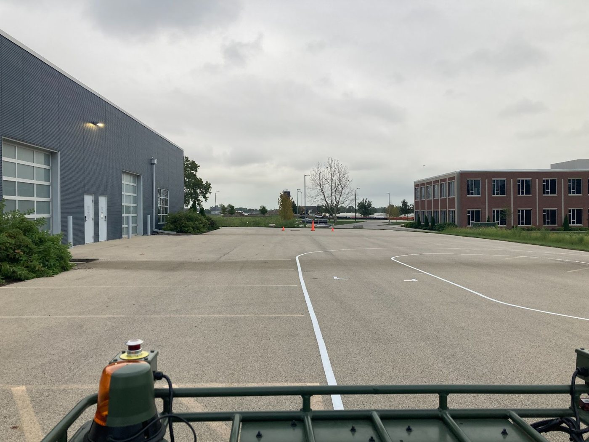
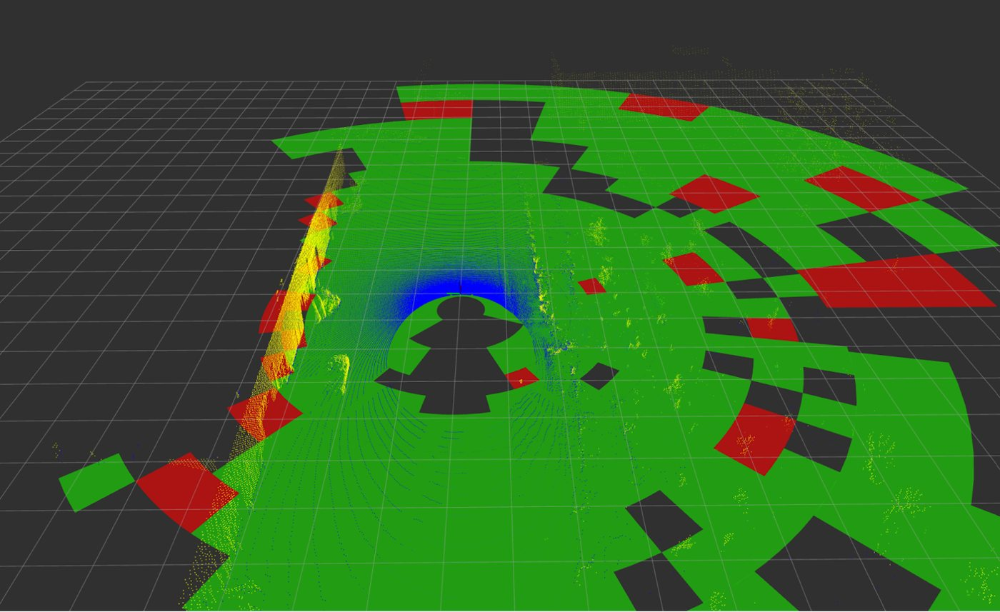
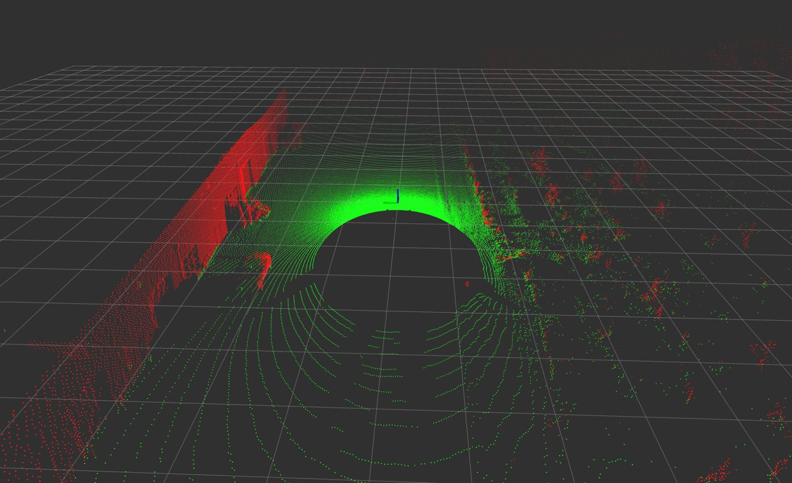
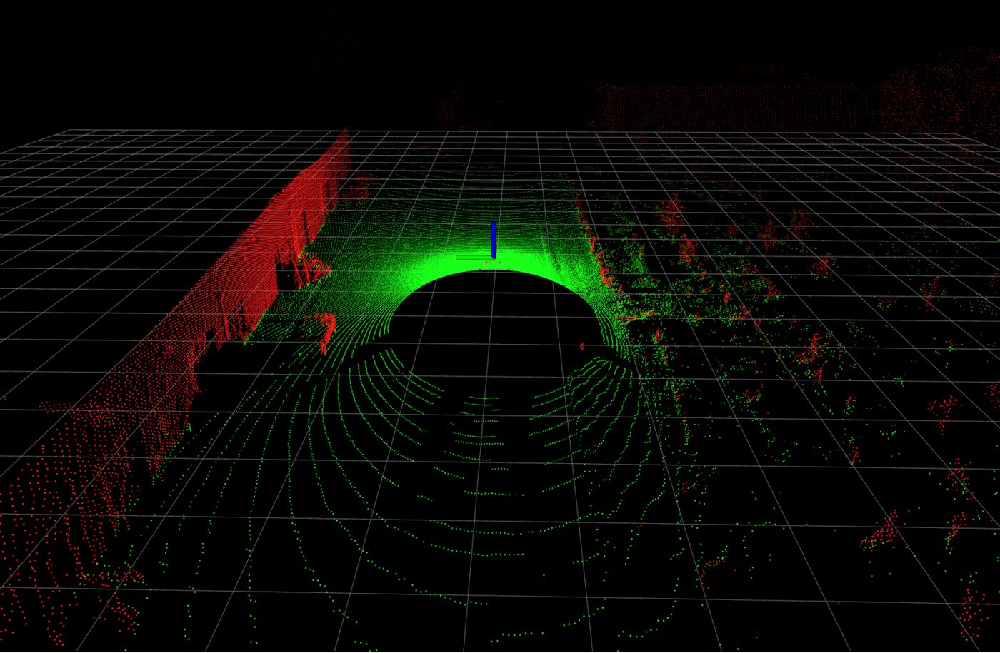

I collected a 1,500-frame, on- and off-road LiDAR dataset (Ouster OS1-128) on a John Deere R-Gator at an outdoor test
course, then ran two geometric methods (Patchwork, Patchwork++) and two learned networks
(GndNet, SqueezeSegV3, with its 20 classes collapsed to ground/non-ground) on frame 800. Below:
the two networks on that frame, and where they disagree. GndNet absorbs the bottom rows of the building wall into the ground.
loading scan…
Frame 800 of the outdoor dataset. GndNet's output was written in a different frame, so I re-registered it to SqueezeSegV3's (9 cm RMSE).
—points labelled ground
—points labelled non-ground
—ground share of the scan
The dataset is unlabeled, so the comparison is qualitative; all four methods segmented 100k+ point
frames in both on- and off-road conditions.

Outdoor test course1,500+ frames, on- and off-road

Patchwork patchesconcentric zone model in RViz

Patchworkframe 800

Patchwork++frame 800
Live: concentric-zone ground fitting in your browser
A single ground plane can't fit real terrain, so Patchwork-style methods split the scan into rings and
sectors and fit a small PCA plane in each bin. Seeding each plane from its lowest points stops walls and bushes from
dragging it upward. Every change re-segments all 72,818 points of an off-road scan from scratch.
ground non-ground
loading scan…
Off-road frame 66 · grid lines show the ring/sector bins · drag to orbit
—of points labelled ground
—of low points (within 30 cm of ground height) recovered. A rough check, not ground truth.
—to segment the scan in JavaScript (— plane fits)
Patchwork on the R-Gator (catkin / ROS)
I adapted the C++ Patchwork node to the tilted OS1-128: 1.8 m sensor height, 15° mount pitch, auto
height estimation off, and a custom loader for our recordings. Each bin gets a verdict:
upright planes become ground, while too tilted and
too high patches are rejected. Scrub through the drive toward the pits.
frame —
loading…
Re-run offline with a Python port of PatchWork::estimate_ground() and the vehicle's params_ouster128.yaml.
—of in-range points labelled ground this frame
—patches accepted as upright ground planes
—patches rejected as too tilted (walls, vegetation)
Zones: 2 / 4 / 4 / 4 rings × 16 / 32 / 54 / 32 sectors from 2.7 m to 80 m. Seeds come from the 20
lowest points per bin, followed by 3 rounds of PCA refitting with a 12.5 cm threshold.
References & credits
H. Lim, M. Oh, and H. Myung, “Patchwork: Concentric zone-based region-wise ground segmentation with ground likelihood estimation using a 3D LiDAR sensor,” IEEE RA-L, 2021. Code: github.com/LimHyungTae/patchwork.
S. Lee, H. Lim, and H. Myung, “Patchwork++: Fast and robust ground segmentation solving partial under-segmentation using 3D point cloud,” IEEE/RSJ IROS, 2022.
A. Paigwar, Ö. Erkent, D. S. González, and C. Laugier, “GndNet: Fast ground plane estimation and point cloud segmentation for autonomous vehicles,” IEEE/RSJ IROS, 2020.
C. Xu, B. Wu, Z. Wang, et al., “SqueezeSegV3: Spatially-adaptive convolution for efficient point-cloud segmentation,” ECCV, 2020.
C. R. Qi, H. Su, K. Mo, and L. J. Guibas, “PointNet: Deep learning on point sets for 3D classification and segmentation,” CVPR, 2017.
Q.-Y. Zhou, J. Park, and V. Koltun, “Open3D: A modern library for 3D data processing,” arXiv:1801.09847, 2018.
Hardware credits. R-Gator: Deere & Company (John Deere). OS1-128, OS2-64 LiDAR: Ouster. Product names and trademarks belong to their respective owners.